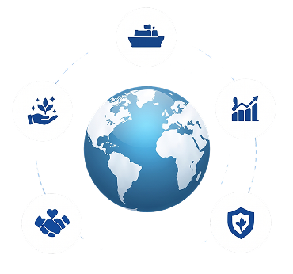

Apa Itu Geostrategi?
Geostrategi adalah pendekatan yang digunakan suatu negara untuk memanfaatkan kondisi geografisnya dalam mencapai tujuan nasional, baik di bidang ekonomi, keamanan, maupun politik. Dalam konteks Indonesia, geostrategi penting karena posisi Indonesia yang strategis di antara dua benua dan dua samudra, sehingga berperan dalam jalur perdagangan dunia sekaligus menuntut upaya menjaga kedaulatan dan stabilitas wilayah.

Memaksimalkan Kontrol Geografis Secara Optimal
Memanfaatkan posisi geografis strategis untuk kepentingan nasional dan regional
Mencapai Tujuan Negara Nasional
Mengarahkan langkah strategis untuk mencapai visi dan misi nasional Indonesia
Membangun Posisi di Ruang Internasional
Memperkuat peran dan pengaruh Indonesia di forum-forum internasional
Menjaga Keberlanjutan dan Stabilisasi Negeri
Menjamin stabilitas, keamanan, dan keberlanjutan wilayah Indonesia